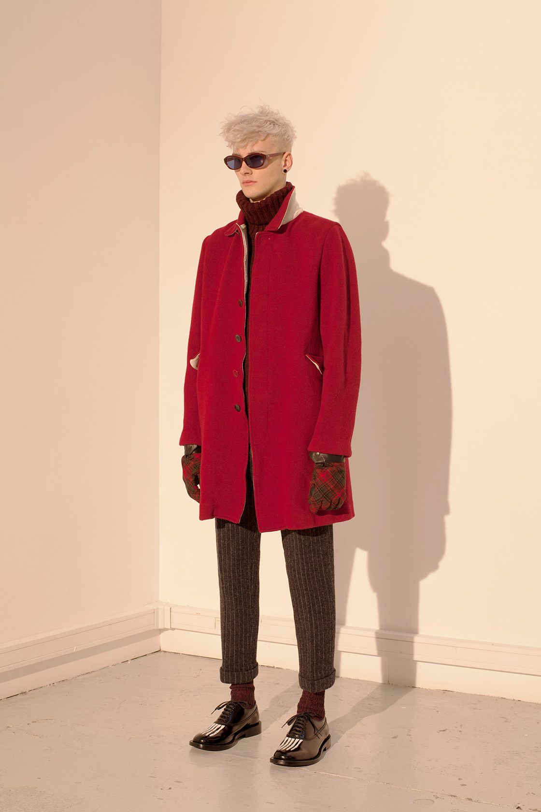

The Human Spectacle
Following the trend of recent seasons, Takahashi continues to create more traditional and contemporary clothing with Autumn Winter 2013. Inspiration for this season comes from the human body itself (Radtke). Traditional garments like suit jackets, sweaters, overcoats, and cardigans are crafted to fit the natural shape of the torso. Models for the look book appear to be in a doctor’s office like setting, getting examined in front of a bright spotlight.
Hover Over Me
AW13 Collection Loook 35
With each outfit from the collection, there seems to be a streamlined look that makes individual pieces merges together onto the model. Standing in front of the white background wall, the pictured model stares into his own shadow as his own anatomy is examined. Tight skinny jeans and a form fitting jacket can also be seen on several other looks from the collection. In addition to the backpack and bomber jacket pictured here, the ribcage graphic also appears on a t-shirt, overcoat, leather jacket, varsity jacket, and tote bag.
AW13 Collection Look 29
Highlighting the warm color pallet of Anatomicourture, this look is contemporary and modern is structure but aggressive in textile choice. A blood red suede overcoat mixed with cropped chef pants keeps the Undercover punk motif alive while maintaining an accessible feel. More re-occurring skeleton detailing can also be seen on the toe of the patent leather derby shoes.
Back to Top